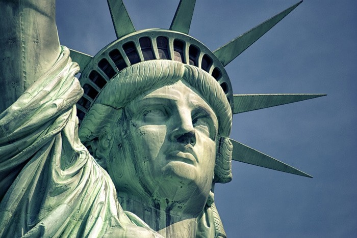

Uno de los monumentos más famosos de Nueva York, de los Estados Unidos y de todo el mundo. Se encuentra en la isla de la Libertad al sur de la isla de Manhattan, junto a la desembocadura del río Hudson y cerca de la isla Ellis. La Estatua de la Libertad fue un regalo del pueblo francés al pueblo estadounidense en 1886 para conmemorar el centenario de la Declaración de Independencia de los Estados Unidos y como un signo de amistad entre las dos naciones.
